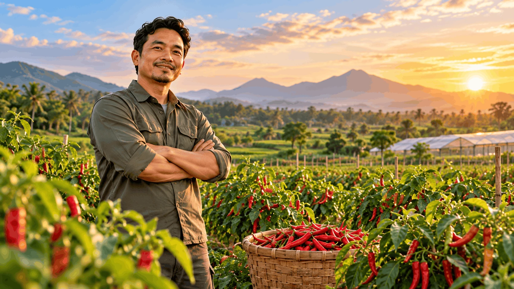
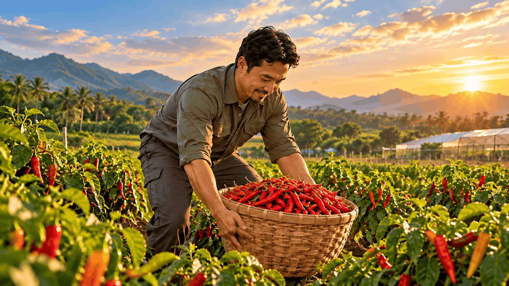
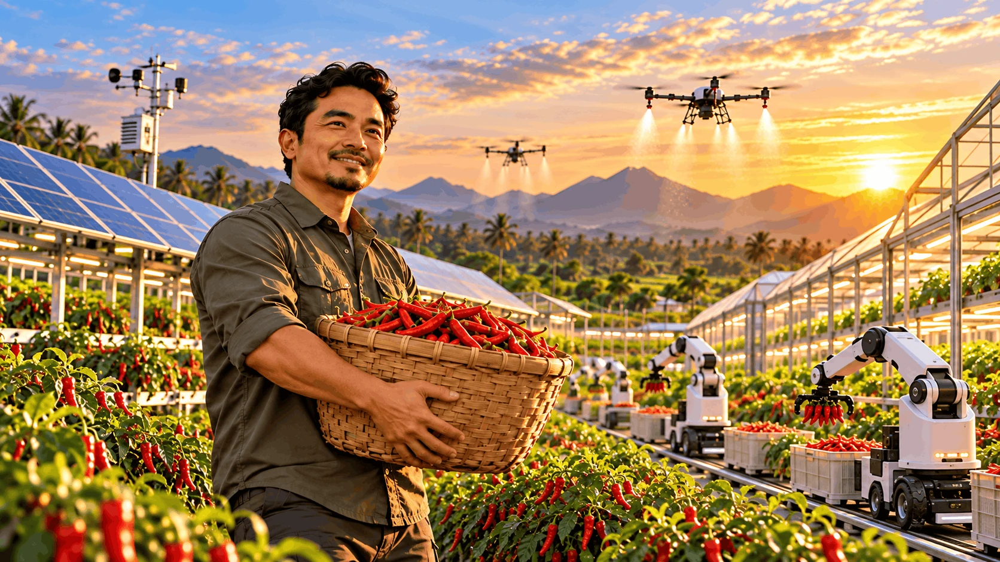
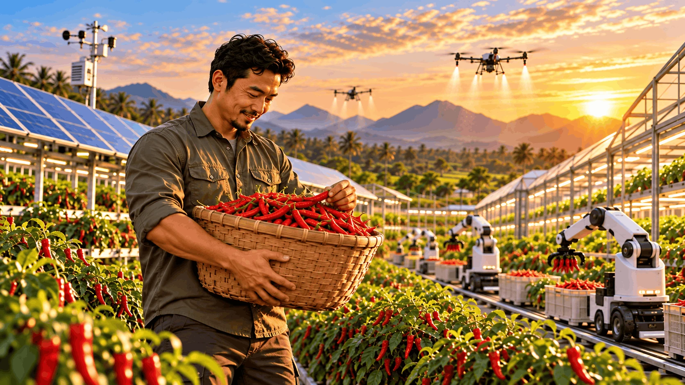
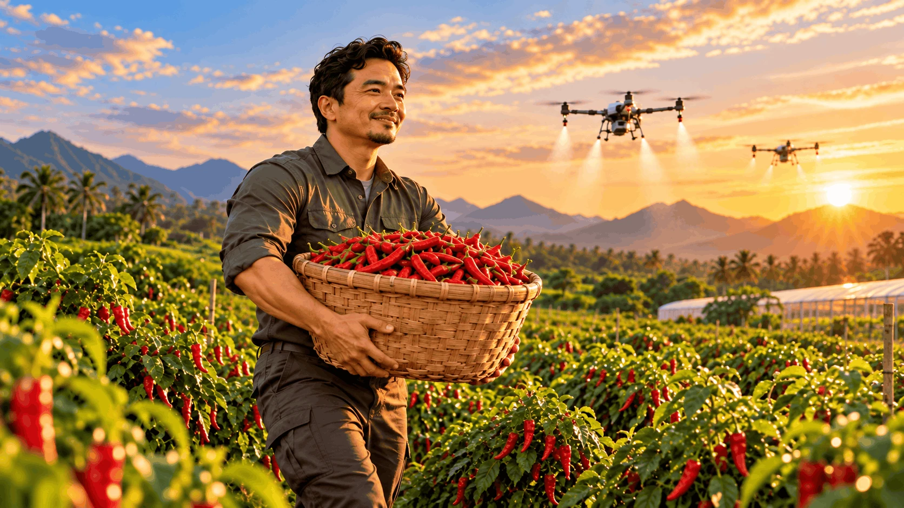
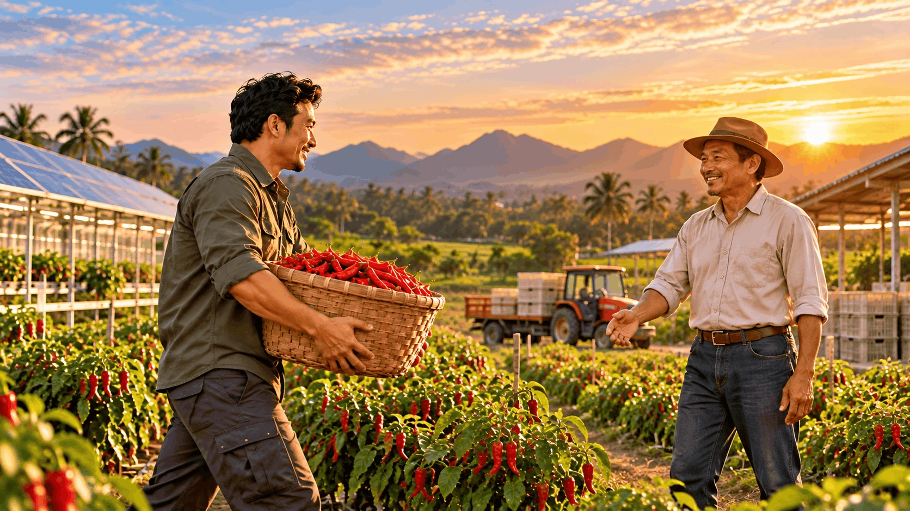
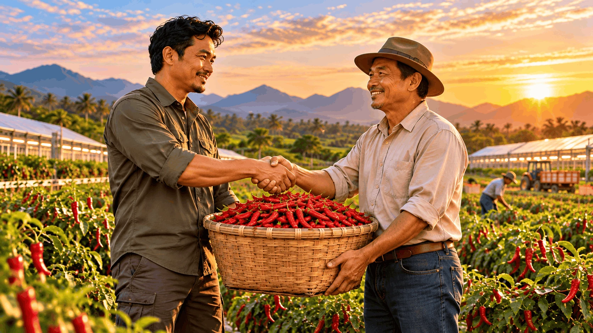
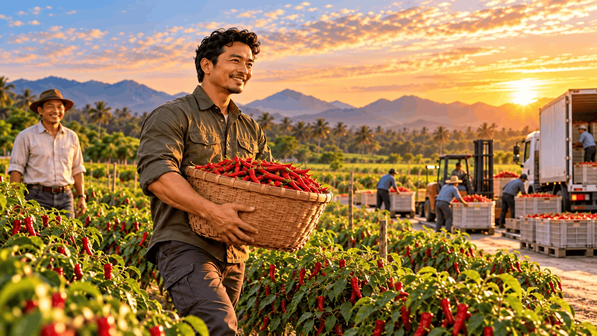

Chili Farming
Cultivating the future from the ground up.
Our story begins in the field, with hands-on chili cultivation, careful crop management and a commitment to better agricultural practices.
Discover our servicesTechnology Farming
Progress powered by innovation.
From solar energy and smart cultivation to aerial drones, ground automation and robotics, we connect practical farming with emerging technology.
Discover our servicesFarm Management
Working together, growing stronger.
We bring technical knowledge and operational support closer to farm owners, helping shape productive and well-managed growing environments.
Discover our servicesInternational Trading
From our fields to wider markets.
From harvest handling and packing to logistics and international connections, our journey extends from Malaysia toward Vietnam and beyond.
Discover our services